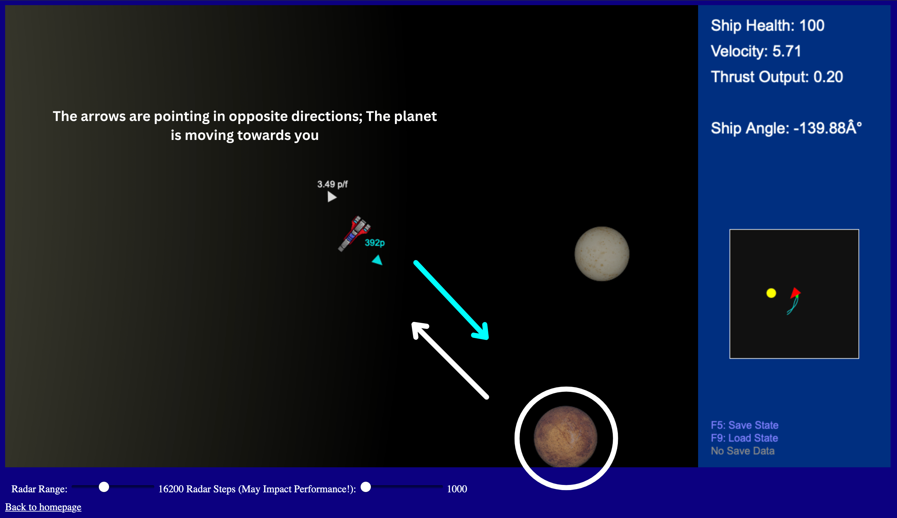

Ship Controls
The 'W' and 'S' keys move the ship forwards / backwards in the direction it is pointing.
The 'A' and 'D' keys turn the ship counterclockwise / clockwise respectively.
The HUD
On the right side of the screen, you can find the HUD menu, which displays your ship's health, its thrust output and its angle.
Ship health goes down if you hit a planet over a certain velocity, which can lead to control impairment (over 7.5 pixels/frame).
Thrust output is how much your velocity will change while thrust is applied in pixels/frame (acceleration).
The ship's angle shows the direction it is pointing in degrees (left: 0 to -180, right: 0 to +180).
The Radar
The Radar can be found in the bottom half of the HUD, and it displays the locations of objects in the solar system.
The scale of the Radar can be controlled with a slider below the main game view to see more or less of the solar system.
Different objects have different colored icons.
Yellow indicates that an object is a Star.
Green indicates that an object is a Planet.
White indicates that an object is a Comet.
You can click on a planet in the radar to display pointers around your ship.
One with the distance to the planet in pixels and the other in the direction of the planet's relative velocity.
Graphic Explanation
Saving / Loading
The f5 and f9 buttons can be used to save and load a system.
The save state is stored locally and can be loaded even when reopening the browser.
What To Do?
You can fly the ship around the solar system and land on different planets.
Gravity is a major theme in Stellar Voyage - The planets, comets and even your ship is bound by gravity.
Planets can collide and merge into a larger one if they get too close to one another.
I understand there isn't that much to do in this version of Stellar Voyage, but you can check the Plans for the Game's Development to learn about what's to come in the future.